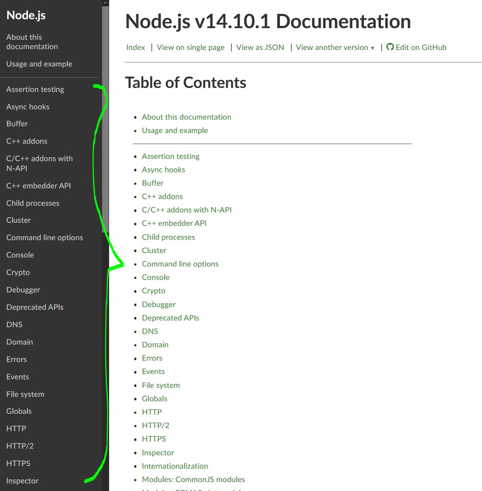
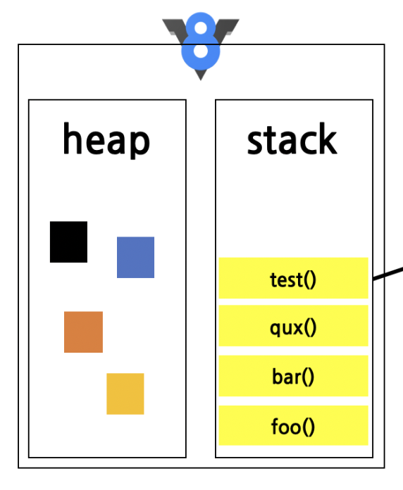

Asynchronous Programming
In this lecture we will introduce asynchronous programming using callbacks in JavaScript.
Asynchronous programming is one of key recurring topics of this course and is intertwined with many other components in not just the programming aspect, but also in networking theory. Success in this topic generally means success throughout the rest of the course.
Learning Goals
- The asynchronous programming paradigm.
- The architecture of the Node.js runtime engine.
Motivation
In your previous courses you have looked at procedural styled programming where statements are executed top down. Even with added functions and object-oriented features, code written like this share the feature that they are blocking.
Blocking: The next task cannot be completed until the previous has completed.
This model may work fine for local applications that run near instantaneously, but when we introduce network overhead and possible data loss, your application may wind up hanging as it waits for data.
task_a(); //network requesttask_b();
Assume that task_a uses the Internet. Due to external factors, it is possible for that task_a to take a large (possibly infinite) amounts of time to complete. Because traditional procedural styled programming must wait for all previous tasks to complete, it is possible for our entire application to lock up entirely due to network instability.
If you've taken CS 340, you might suggest using threads to solve this problem.
A programmer had a problem, so he used threads. Then hhade tprobwolems.
Interacting with threads directly means having to deal with race conditions, which is not just difficult to get correct, it's out of scope for most application developers.
Tasks like reading and writing files from hard disk, downloading content from the Internet, and encrypting files can often take an unbounded amount of time due to external factors (file size, bandwidth, disk speed, availability of dedicated hardware components). It's unreasonable to have the program stall, while the operating system works on these problems.
Node.js allows us to avoid working with threads directly through it's API. A lot of the tools we will use happen to utilize threads under the hood, but we won't have to worry about this, as the details are abstracted away by the Node.js architecture.
Lab
Open a desktop browser like Firefox or Chrome and navigate to the course home page.
Open up document inspector with
CTRL + SHIFT + INavigate to the console tab. Ignore any errors and warnings that you see.
Copy this program into the console, and wait until it prints "Finished", should take about 10 seconds
- If it finishes much faster, adjust the value of
iuntil it takes roughly 10 seconds to print "Finished" - Run the program one more time, and while it is executing (before it prints "Finished") try to interact with the webpage (try highlight some text, try right clicking to open a context menu, try click on some buttons and links), none of these should work.
- When the "Finished" statement finally prints, all the blocked commands quickly fire in quick succession afterwards.
- Repeat step 6, but use this code instead
When you try to interact with the page now everything should work and 10 seconds later "Finished" should print.
You won't be allowed to use
setTimeoutafter this initial demo. It serves as a good motivator for comparing procedural and asynchronous programming, but I've found this function gets misused by those struggling to understand asynchronous programming.They use it to create artificial delays in their program that give it the appearance of it working, but the code it is riddled with race conditions and artificial delays. When used correctly, asynchronous programming should not have either.
Specifically for all graded components of this course you will not be allowed to use
setTimeoutor it's variants (likesetImmediateorsetInterval).In the appendix there is an example of why
setTimeoutcan be dangerous for those just learning asynchronous programming, but you should look at that last as it utilizes some constructs we haven't discussed yet.
Node.js
The Node.js runtime is powered by the open source V8 JavaScript engine. For our purposes, JavaScript is single threaded, but supports asynchronous programming through the use of built-in threads within the runtime that the application programmer has no direct access to.
The application programmer will be able to make specific calls to Node.js's API's, which uses threads to accomplish the task under the hood. Because they are abstracted away, the application programmer won't be able to interact with those threads directly.
This provides a safe way to do multithreading on long running tasks, without needing to worry about complex operating system issues like semaphores and mutexes.
Within the next few demos we will learn how to properly interact with those APIs.
API: Application programming interface - A collection of public functions, methods, and variables that form a way to interact with some (typically built in) utility. Examples include the Node.js's File I/O API and the Browser's Geolocation API
Typically we can use API's by just calling their public interface methods like
fs.readFile()ornavigator.geolocation.getCurrentPosition(). We don't need to worry about how these work under the hood; the complexities have been abstracted away for us. We can use it like a typical function call.
Node.js Architecture

Node.js API (written in JavaScript)
Node.js's API's provides public interfaces that allow our application code to communications with the operating system in a limited manner. This abstraction model allows the application programmer to utilize system resources without concerning themselves with how those resources get obtained.

Node.js Standard Library
Most of Node.js's standard library of functions is also written in JavaScript. Modules like Console, Timers, and HTTP are referred to as the core modules.
Node.js Bindings
For other modules where speed and correctness are important it's better to reuse existing battle tested libraries. We have a problem that most of these libraries are written in C/C++.
v8, libuv, c-ares, http-parser, open-ssl, and zlib are all written in C/C++.
- zlib: Used to compress/decompress files
- open-ssl: Used encrypt/decrypt files, used in
tlsandcryptomodules - http-parser: Used for parsing HTTP request/responses
- c-ares: Used for
dnsmodule (translates human readable web address to IP address)
Node.js Bindings provides a way to bridge JavaScript and C/C++.
C/C++ Addons
C/C++ Addons extend this by allowing the user to write their own C/C++ library to be used in Node.js. We won't be discussing this topic.
V8
V8 is an open-source JavaScript engine developed by Google. A JavaScript engine is a program that executes JavaScript code. Currently the most popular engines are V8 (Node.js and Google Chrome) and SpiderMonkey (Firefox).
Traditional JavaScript engines were interpreters that ran JavaScript code one line at a time. Modern JavaScript engines contain both an interpreter and a compiler, which pass the AST into both programs so that the code runs concurrently. If the interpreted code finishes execution first, the compilation job is discarded, but if the compilation process finishes first, the optimized machine code is swapped in place with the interpreter. This compilation and swapping repeats as secondary passes allow JavaScript engines to discover further optimizations.

V8 supplies us with a Stack where are function calls live and a heap where variables are stored.
V8 is single threaded, that is the program thread can only execute a single task at a time. As our program runs and we have functions calling other functions, those calls are pushed and popped from the stack as they run to completion.

Libuv
When we talk about JavaScript a third construct the Event Queue is often brought up. This is provided to us by the libuv library.
libuv is a multi-platform C library that provides support for asynchronous I/O based on event loops

When an asynchronous call is made that task (whether it be reading a file or making a network call) is given to libuv and the execution of the program continues without waiting for a response.
Libuv takes the asynchronous task and either pushes it into the Task Queue if it requires the CPU to complete, or if the task is IO related and requires accessing disk it will make the request.
The CPU bound tasks will wait in the Task Queue for an available worker thread. These worker threads will pick up tasks as they become free.
IO bound tasks (like writing to disk) will be polled (checked for updates) at set intervals by the event loop.
Calls from asynchronous API methods have a secondary parameter the callback. The callback is a function that dictates what should occur once the original asynchronous call finishes.
There are two parts to asynchronous calls:
The task that you want to complete (eg. write this file)
What will occur when that task is finished. (the callback)
This can includes the function that does nothing (common if you are writing a cache), but you must have a function, you cannot give it a null value.
Rewritten with Arrow Functions
A good way to write your code if you plan to reuse this callback function definition.
do_after_reading is the callback in this scenario.
Event Queue
As asynchronous tasks complete the attached callback function is placed on to the Event Queue.
In the above example as file01.txt is finished being reading the function do_after_reading is added the the event queue. It stays on this event queue until V8's stack is completely empty.
Event Loop
The event loop will periodically inspect V8's stack. Because V8 is single threaded, tasks cannot be added so long as the stack still has other instructions. The event loop waits until the stack is completely empty and then moves the first item from the Event Queue on to the stack for execution. As that task completes and is removed from the stack the next item from the event queue is moved to the stack.
When using an asynchronous method the only place you are guaranteed to know the function has run to completion is inside t the callback.
Inside that callback, it is quite common to make additional asynchronous calls restarting this process. This can be done recursively creating a process that never ends, but also doesn't block other processes. This is because the recursive asynchronous call upon completion adds it callback to the end of the Event Queue.
In contrast if you put an infinite loop on the stack, because the stack never empties, all callbacks will starve in the event queue.
DNS Resolution
Domain Name System (DNS) is an Internet service that converts human readable domains into (one or more) machine readable IP addresses. The c-ares library written in C provides DNS support and we can utilize this package from within the dns module.
We will learn the details of this process later in the semester, but to keep it relevant to the task at hand, the IP address information is fetched from special servers on the Internet backbone. As that data makes it way back your computer, jumping from server to server, it is cached at each intermediate DNS server along the way, so future requests are sped up.
Downloading this information will still take some time though. How much time depends on several factors, your internet speed, whether the connection is wired or wireless, how many servers the request needs to travel through, and if there is a record cached at intermediary already.
It is also possible for the request to never complete (for example if your connection is weak, throttled, or blocked entirely). Node.js provides timeout options for this.
Note while testing in Visual Studio Code v1.49, I encountered some bugs with VSCode's debugger. These went away when I switched to running the program in terminal directly. I was able to track it down to scenarios where there were multiple DNS requests.
I created a bug report, you can follow along to see if the bug is real (or more likely) some dumb mistake on my part.
https://github.com/microsoft/vscode/issues/106821
Until this gets resolved, to avoid these issues for this demo and the first assessment use Terminal to run the application instead of running from within Visual Studio Code Debug Console.
Open up a terminal, navigate to the exercise location and run the command
node <filename>eg.
node 01-concurrency.jsRepeat the process for each demo.
Tip: You can type
node, a space, and then hit tab to cycle through files in the current directory.Tip: For quicker navigation, you can use Windows Explorer, navigate to the folder, hold Shift, right click inside somewhere inside the directory (not on a file), and an extra hidden context menu
Open Powershell herewill pop up.
Our First DNS request
Play around with this code try different websites
Explanation (By Line Number):
Utilizes the
dnsmodule to access built in APIs for DNS requests.This is the domain we want to convert
dns.resolve(hostname, callback)The DNS resolution request is sent to the operating system whom performs the necessary networking to get it completed. When the worker thread gets a response back (or the request times out) it puts a new task
after_resolutioninto the event queue to be completed when the call stack is empty.Declares a function
after_resolution. (This function declaration occurs before any other variable is created) This function accepts two argumentserr,records. These arguments are the return values from the previously completed asynchronous code. The argument names don't matter, but the order does.Node.js APIs typically return errors as the first argument. Errors are an object type so you can look at the error details in the
errobject.The second parameter typically represents the data that was returned from that request.
In this case the second parameter
recordsrefers to the data that was retrieved from the DNS request. There are exceptions to this, for example when writing files withfs.writeFile()no data is retrieved. For specific examples of what data is returned back from the completed asynchronous request, look at the Node.js API documentation.
When printing
recordsit will be wrapped in braces. The data is inside an array because DNS requests can result in multiple IP addresses, anyone of which are valid to be used.When registering a domain, the owner is asked to supply the IP address that the domain should resolve to. Multiple values can be supplied indicating the site is using load balancing for reliability purposes.
As of the time this document was created
cat.comresolved to two different IPs.
Function declarations can be ordered in any fashion
New Function
dns.resolve(hostname, callback)
hostname: string representing domain to get IP address forcallback: Functionerr: Error - Information related to why the DNS failed.falseif no error.records: Array of strings - Contains the IP addresses that are associated with the hostname
https://nodejs.org/api/dns.html#dns_dns_resolve_hostname_rrtype_callback
Multiple Synchronous Tasks
Completing tasks synchronously means that each subsequent task will only begin after the previous task completes. In procedural styled languages this is as simple as putting the next instruction after the current instruction. When working with Asynchronous API's this does not work.
This will not work because dns.resolve() is executed asynchronously. Even in the best case scenario where the asynchronous task finishes right away and the callback after_resolution is added to the event queue immediately; it is only executed once the stack is empty. The call stack won't be empty until next_task(data) is executed. The following occurs:
dns.resolve(domain, after_resolution);This is done on a worker thread which will addafter_resolutionto the Event Queue when it completes.next_task(data);datais currentlyundefinedso that is printed.- Call Stack is empty, take next task from Event Queue
after_resolution(err, records);This setsdatato the correct value, but there are no more print statements.
It is important to understand this is NOT a race condition. Even if dns.resolve() finishes immediately, next_task() will always execute first, because existing code on the call stack has priority. This is always the case with asynchronous code in Node.js.
By putting the next task as the last statement in the after_resolution function the following happens instead:
dns.resolve(domain, after_resolution);This is done on a worker thread which will addafter_resolutionto the Event Queue when it completes.- Call Stack is empty, take next task from Event Queue
after_resolution(err, records);This setsdatato the correct valuenext_task(data);datais printed
This strategy of passing control to the next function is called Continuation passing style
Continuation Passing Style
This next example has us performing two DNS resolutions back to back. (venus then mars) Once the first one is finished, the second one starts.
Lets walk through what's happening here:
dns.resolve(venus, after_venus);- The resulting callback is added to the Event Queue, which will only move a task over if the call stack is empty.Call Stack is empty, take next task from Event Queue
after_venus(err, records)- addsrecordstoip_addressesdns.resolve(mars, after_mars);- The resulting callback is added to the Event Queue, which will only move a task over if the call stack is empty.Call stack is empty, take next task from Event Queue
after_mars(err, records)- addsrecordstoip_addressesTurns the array
ip_addressesinto a comma separated string, before printing it out
The order in this scenario is guaranteed, if both exist, the IP address of venus will always print before mars
Concurrency
DNS requests are generally better done concurrently. Each task is not related with the prior one. To achieve concurrency we use the fact that each call to dns.resolve() is done asynchronously and the first call to dns.resolve(venus,after_venus) merely requests the OS perform this resolution, it does not wait for the OS to reply, the next line of code will execute.
The order of the two console.log("Prints Immediately") is guaranteed, The order of the print statements from dns.resolve() is not guaranteed.
To test this, after running it once, change venus.cs.qc.cuny.edu to red.cs.qc.cuny.edu. Because the request for mars.cs.qc.cuny.edu is likely cached from it's first execution, the printing of messages will likely be reversed (although this is also not guaranteed!).
Most DNS servers have caching in place though, so they'll remember prior results. The act of making the DNS request will likely have the results cached on servers you don't control, meaning subsequent requests will likely (but are not guaranteed to) resolve in the order they are sent. If you run the code a second time red will likely appear before mars this time.
If you need some fresh domains to try this with, here are some that I've found on the cs.qc.cuny.edu network.
xxxxxxxxxxgodel.cs.qc.cuny.edu alpha.cs.qc.cuny.edu apple.cs.qc.cuny.edublack.cs.qc.cuny.edu enigma.cs.qc.cuny.edu wizard.cs.qc.cuny.eduwhite.cs.qc.cuny.edu sigma.cs.qc.cuny.edu delta.cs.qc.cuny.eduomega.cs.qc.cuny.edu gamma.cs.qc.cuny.edu castle.cs.qc.cuny.edutheta.cs.qc.cuny.edu tundra.cs.qc.cuny.edu gothic.cs.qc.cuny.edu
Note most of these domains do not have an http server associated with them so you won't be able to visit them in a browser.
Closures
after_venus and after_mars have roughly the same code inside them.
We want to generalize them into a single function after_resolution(err, records)
Notice in the previous code we have separate variables for venus and mars . To combine these two variables into a single variable domain we need to use closures.
Before looking at the solution:
I'd recommend trying to write the function
after_resolutionfirst using your existing knowledge.Getting stuck is fine, I do not expect many people to solve this problem, the very act of attempting it however will help you understand what closures are trying to solve.
We utilize a closure here, which has us putting a function inside a function to preserve access to an outer scoped variable (domain in this case)
Stepping through the code:
resolve(venus);dns.resolve("venus.cs.qc.cuny.edu", after_resolution): Even if this resolution is immediate, the resulting callback is added to the Event Queue, which will only move a task over if the call stack is empty, which it is not (This entire program must run to completion before the stack is empty)End of
resolve(venus)jump back to previous locationresolve(mars);dns.resolve("mars.cs.qc.cuny.edu", after_resolution): If this resolves beforevenusresolves, it will appear in the Event Queue first.Call Stack is empty, take next task from Event Queue
after_resolution(err, records): printsconsole.log(domain, records);Call Stack is empty, take next task from Event Queue
after_resolution(err, records)printsconsole.log(domain, records);(Depending on which resolves first,
venusormarsthe order of printing is not guaranteed.)
Closures are a technique that allows variables to still be accessible, even after they would normally be out of scope.
By step 6, both calls to resolve has terminated, so domain should no longer be in scope, but there are no errors when console.log(domain, records); is called, in fact each call to after_resolution prints out a different value.
How does this work? A closure is a collection of all the variables in scope at the time of the function's initialization. These closures are automatically generated and will be associated with that instance of the function, until it is no longer in scope itself.
Each instance of after_resolution will have associated with it, a closure that includes it's own variable domain. Even though they share the same variable domain name domain the variable that they are closed under are each unique. This is how domain is able to print both venus and mars despite not having a guarantee on which one evaluates first.
N Domains Concurrently (Loop)
The next step is to scale up, if we need to deal with n domains concurrently we need to introduce a loop.
This example includes some domains that don't exist, including earth.cs.qc.cuny.edu and definitely.not.a.domain these should either print the Failed to resolve message.
Certain ISPs (like Verizon) may redirect requests that fail to resolve to their own custom search. You may not see any
Failed to resolvemessages in this case, instead both fake domains should point to the same server, that your ISP uses for their custom search.
There is a sleight of hand here though:
In most languages when we write a for loop, any declaration placed inside the first part is considered outside the scope of the loop.
xxxxxxxxxx// Java Snippitfor(int i = 0; i < 5; i++){ System.out.println(i);}is equivalent to
xxxxxxxxxx// Java Snippitint i;for(i = 0; i < 5; i++){ System.out.println(i);}
We have a problem though when this is done with asynchronously functions.
Run this in your JS browser console:
Because i gets moved outside the scope of the loop
All instances of i are refer to the same variable and prints out the number 5, five times.
In the JavaScript specification variables declared as block scope using let are to be scoped as if they are inside the loop. On each iteration of this loop a new variable i is declared with it's value set to be the value of the previous i after the increment.
This will print 0 to 4 as the closure preserves each unique instance of variable i.
N Domains Synchronously (Recursion)
Performing a large number (100+) number of DNS resolutions concurrently will likely not work as most DNS services use rate limiting to prevent Denial of service attacks.
Here's an excerpt from Google's public DNS hosted on 8.8.8.8
https://developers.google.com/speed/public-dns/docs/security#rate_limit
Within Node.js, the maximum timeout seems to be hardcoded to 5 seconds. If it takes longer than that you will get an ETIMEOUT error.
It looks like the current version of Node.js does not support changing the maximum timeout from within the DNS built in module.
https://github.com/nodejs/node/issues/7231
If we need to make 100+ DNS requests, it's better to do each DNS requests synchronously. Make a single DNS request, complete it entirely, before making the next one to avoid timeout issues.
If we need to perform n tasks synchronously we need to extend continuation passing style. This is done by counting how many requests are finished. In the Continuation Passing Example, you should have noticed that after_venus and after_mars had roughly the same code except for one line after the else block.
after_venus has dns.resolve(mars, after_mars); (more domains to be checked)
after_mars has console.log(ip_addresses); (no more domains to be checked)
If we needed to extend that result to n domains, we can do so using an if statement to split into two paths:
- a recursive case if there are more domains to be checked,
- a base case to stop at, if there are no other domains to check.
Lets walk through what's happening here:
dns.resolve(domains[0], after_resolved);Tells the OS to make the DNS request (does not block because this API call is asynchronous). The resulting callback is added to the Event Queue, which will only move a task over if the call stack is empty.Call Stack is empty, take next task from Event Queue
after_resolution(err, records):count++;,ip_addresses.push(records)
countis less thandomains.lengthso execute else blockdns.resolve(domains[count], after_resolved);The resulting callback is added to the Event Queue, which will only move a task over if the call stack is empty.... Repeat Steps 2 to 4 until count is equal to
domains.lengthDo not make further recursive calls, instead print the
ip_addressescollected
As these are all executed synchronously, order is guaranteed.
A hybrid approach is likely even better, as rate limiting typically occurs on a requests/timeframe basis. So sending 20 requests and waiting for them to resolve before sending the next 20 should be more effective than 1 at a time. Further testing can find that sweet spot that avoids ETIMEOUTS.
Going from Synchronous to Concurrent
Scenario: domain-01.txt contains multiple domain names inside it, one on each line. We want to read the contents, then only after the data has been read use dns.resolve() to convert each line into an IP addresses and print them to console.
DNS resolution is done concurrently, if there are multiple domains, order is not guaranteed.
Utility Functions:
Like dns.resolve(), fs.readFile() will give the instructions to the operating system to perform the read operation, but will not wait for them to be completed. If another task needs to be done after the file is read, then it should be carried out inside the callback. (In this example we call resolve() inside after_read)
New Function
fs.readFile(path, options, callback)
path: string representing location of fileoptions: options for determining how the binary data is decoded. For our class we will be using either:{encoding:"utf8"}for strings or{encoding:null}for binary data.callback: Functionerr: Error - Information related to why the read failed.falseif no error.data: Data read. If{encoding:"UTF8"}it is a string, if{encoding:null}it is a buffer (Buffers discussed later)
https://nodejs.org/api/fs.html#fs_fs_readfile_path_options_callback
Going from Concurrent to Synchronous
Scenario: We have an array of valid domains we want to convert to IP addresses (and we want to do this concurrently), the final output should be a single string of all IP addresses separated by newlines ("\r\n"). We use the same counting technique used previously to only progress to next_task() after we have converted all domains.
We will have n calls to resolve(). Only the call that resolves last will pass the
count === domains.length check, which will then progress to next_task()
Remember there are no race conditions here as the event loop only moves one callback from the Event Queue into the call stack at a time and only if the call stack is empty.
Order is not preserved in this case, as whatever DNS request resolves first will be be placed in to the ip_addresses[0]. Verify this by replacing one of the domains with a domain that you know exist, but haven't visited recently. The order should not match the input order (although this is not guaranteed, so you may have to do it a few times).
Additional Notes:
Preserving Order
Order can be preserved by reserving space for each result and passing not just the domain, but also the index into the closure.
We do this by using Array(n) which creates an empty array of size n
When the resolution completes it will add the result into the reserved slot using the index.
I've added an additional console.log(ip_addresses); so you can see the IP addresses get populated. (Node.js will print <X empty item/s> for empty slots)
Again after running it once, replace one of the domains with a domain that you know exist, but haven't visited recently and that should be filled in last, but this time in it's reserved spot.
Compressing Data with Deflate
Compression is the process of taking data and reencoding it such that the resulting output has the same information, but in fewer total bytes. Because this process is CPU intensive, and can take a substantial amount of time, it's API was designed to be asynchronous.
The zlib module provides support for compressing and decompressing various formats. We will be using the DEFLATE format.
Note we will be compressing strings, not files so you won't be able to decompress the output using decompression software (7zip, winrar, ...) as there is no file structure information associated with the compressed data.
This demonstrates a style of writing code using by placing functions inside of functions. This is helpful because we can access the variable buffer from inside after_write thanks to a closure.
The drawback to this style of writing code is the added complexity of having multiple layers of nesting in your code. When taken to an extreme level this is referred to as callback hell.
Try to decouple these functions. That is try to write two separate functions that after_compress and after_write that are not nested inside of each other.
The solution is posted below, but try it yourself first.
Again it's fine to get stuck, this is expected and you can learn a lot about what we are trying to accomplish in the process. When you see the solution afterwards you will understand the motivation better.
Solution:
The problem we have is that we can't access buffer.length if we extract after_write out of after_compress The closure preserved our access to that variable, and the fs.write() function only gives us back a single parameter err without anyway to input additional data.
The solution is to use a wrapper function. When fs.writeFile() finishes, an Anonymous arrow function (err) => after_write(err, buffer.length) is put on the Event Queue. This function takes the returned error and forwards the results to after_write(), but also includes the buffer.length.
Callbacks have a restricted format as defined by their API. To pass in additional parameters we use a wrapper function.
We use an arrow function here for succinctness, but a regular function should work too.
Now that you've seen the solution, for further practice go through the previous demo's and try to extract
after_resolutionfromresolveusing the same techniques. Of course the output should be unchanged, we are just modularizing our code to minimize the nesting of functions. This can be difficult for some of the demos, but it can be done for all of them.
Additional Notes regarding Encoding
Data stored on computers is typically referred to as binary data as it is represented using 0 and 1s. When we are encode data using a format like ascii or utf8, we are structuring the data in a way that is readable by text editors. This added structure comes with some overhead even if we stick to just English text.

In contrast if we were looking to minimize used space we can compress our data using algorithms like Huffman code, and store it as binary. It will no longer be readable by a text editor, but the file size will be substantially smaller.
fs.writeFile() is fairly smart in that regard, it can tell whether you are trying to write a string (in which case it will choose encoding format "utf8") or a binary file (in which case it will use no encoding, and write the data exactly as it is)
When reading files however it cannot tell, as the same typing information is not available. This is why when using fs.readFile() it requires an encoding format. (For this course this is easy, strings are "utf8" and binary data is null)
New Functions
fs.writeFile(file, data, callback)
file: string representing location of file to write, If file doesn't exist it will create it, if it does it will overwrite the existing contentsdata: data to writecallback: FunctionerrError message in case the write fails
https://nodejs.org/api/fs.html#fs_fs_writefile_file_data_options_callback
zlib.deflate(buffer, callback)
buffer: buffer or string content to compresscallback: FunctionerrError message in case the compress operation failsbufferBinary representation of the compressed data.
https://nodejs.org/api/zlib.html#zlib_zlib_deflate_buffer_options_callback
Decompressing Data with Inflate
New Functions
zlib.inflate(buffer, callback)
buffer: Binary representation of the compressed data.callback: FunctionerrError message in case the decompress operation failsbufBuffer: Decompressed data that has yet to be decoded yet. ApplytoString("utf8")to read the bytes as a"utf8"String.
https://nodejs.org/api/zlib.html#zlib_zlib_deflate_buffer_options_callback
Since we know the input file has been passed through DEFLATE compression, we will treat data as a binary file. When reading it, we will use encoding format null which tells Node.js to consider it literally as a series of 1s and 0s and don't try to convert them to readable characters. data in this case is not a string, but a Buffer type.
zlib.inflate() will decompress data and put the result into buf . Because we never specified the encoding of this, the result will still be treated as a series of 1s and 0s. To tell the Node.js to treat this as readable text, we apply the function Buffer.toString("utf8")
If we remove the .toString("utf8") what prints out is a Buffer type with a series of hexadecimal numbers representing the literal 1s and 0s in a condensed format.
The next file extracts out the function after_decompress so that it is not nested under after_read
Appendix
Why can't we use setTimeout() in this course?
During my analysis of past assignments, I've noticed a common mistake was to use this function to create artificial delays, which create programs that are slow, hardware dependent, and prone to race conditions. By removing student's access to this function the use of these "hacks" disappeared.
Specifically code like the following code was problematic:
The student in question would see that fileContents was undefined and delay the printing by 1 second to compensate.
The problem with this code is two fold:
The output depends on the read task finishing within 1000 milliseconds. What if we were using a slower cd rom, a floppy drive, or a networked drive? What if the file were larger?
I've supplied a script that creates a 512MB file, run the script, and swap out
file01.txtfor the createdfile02.txtinmistake.jsand see if the program finishes. (If you have a SSD it might actually finish, in that case just imagine that the file was even larger!)For input large enough this application will eventually fail.
Reading a small file does not take 1000ms, but because we cannot control the input, we have a large constant delay no matter what size the file is. What if we need to read 1000 files of arbitrary size synchronously? Now our program takes 1000 x 1000ms.
For this course don't use setTimeout at all.
Outside of this course, use setTimout when you need to simulate time passing. If you're using it to create artificial delays, so that another function finishes first, you are introducing race conditions and this it is no longer a program, but a series of hacks glued together.